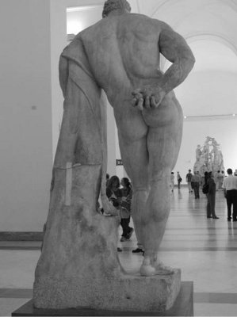

Lapit'lerin (Lapithes) kralı İksiyon (Ixion), saltanatını sürdürebilmek için gerçekten de her türlü insanlıkdışı yollara başvurabilen ikiyüzlü biriydi. Hatta ufacık bir çıkarı uğruna eniştesini bile öldürmüştü kurduğu bir tuzakla! Bu suçu duyulunca da hemen kurbanlar kesip tanrılara yalvar yakar olmuş, günahlarından arındırılmasını istemişti. Baştanrı Zeus da nedense acımıştı ona. Onu günahlarından arındırdığı gibi, Olimpos'taki sarayında bir de yemek verip ağırlamaya kalkmıştı! İksiyon bütün yüzsüzlüğüyle, yemek sırasında Zeus'un karısı tanrıça Hera'ya göz dikmişti bu kez de. Bunu sezen Zeus, hemen karısı Hera'ya benzeyen buluttan bir heykel koyuvermişti İksiyon'un yanına...
İşte İksiyon'un Hera'ya benzeyen bu buluttan heykelle birleşmesinden, dilimizde Atadam da denen at gövdeli, dört ayaklı ve insan başlı bir Kentaur dünyaya geldi. Bu canavar Kentaur, daha sonra Peliyon tepesindeki kısraklarla çiftleşti. Ve bu kısraklardan tür tür Kentaurlar türedi dünyamızda... Bu arada Baştanrı Zeus, arsız kral İksiyon'u Ölüler Ülkesi'nde durmadan dönen bir tekerleğe zincirlerle bağlattı!..
Peliyon tepesinde oturan Kentaurların hemen hepsi de o çağın insanlarından daha ilkeldiler; vurucu-kırıcıydılar... Etleri çiğ yerlerdi. Üstelik de şaraba çok düşkündüler! Hatta şarap tanrısı Diyonisos, her dünyaya gelişinde, önüne çıkan bu Kentaurlara bol bol şarap dağıtmaktan bıkıp usanmıştı... Ne var ki o dev cüsselerine karşın içtikleri birkaç tas şarapla hemen çarpılır, sonunda yapmadık rezillik de bırakmazlardı!..
Kral İksiyon'un soyundan gelen bu Kentaurlara benzemeyen, Kıbrıs Kentaurı denen bir başka tür daha vardı. Onun da öyküsü gene Zeus'a dayanıyordu...
Baştanrı Zeus; Olimpos'tan dünyamızı gözetlediği bir gün, tanrıça Afrodit'i kendi ülkesi olan Kıbrıs'ın üzüm bağlarında gezinirken görmüş, görür görmez de kafasından hınzırca şeyler geçmeye başlamıştı. O yüzden hemen kılık değiştirip sarayının penceresinden yıldızlarla dolu o büyük boşluğa atlamış, sessizce süzülerekten doğruca Afrodit'in yanında almıştı soluğu!.. Evren güzeli tanrıça Afrodit de Zeus'un bu zamansız ziyaretinin nedenini hemen sezmiş; ondan fırtına gibi kaçmaya başlamıştı... Ne var ki şehvetin doruğundaki Zeus da onun ardısıra koşarken tökezleyip düşmüş ve kendini tutamayıp düştüğü yerdeki toprağı döllemişti... Böylece döllenen toprağın ürettiği yaratıklara "Kıbrıs Kentaurları" adını vermişti o çağın insanları...
Zeus'un öte dünyaya gönderdiği kral İksiyon'un boşalan tahtına oğlu Pritos (Prithos) geçti. Bir süre sonra da evlenirken çok görkemli şölenler düzenledi... Bu arada barışçı görünmek için akrabaları olan Kentaurları da çağırmayı unutmadı.
Kentaurlardan korktukları için düğüne gelen çağrılılar, altın ziynet türünden bir şeyler sundular kral Pritos'a. Ne var ki halkın ahı tutmuş olmalı ki, hiç beklenmedik işler açıldı kral Pritos'un başına!.. Şaraba çok düşkün olan Kentaurlar, onu tasla içmeyi bırakıp tulumları başlarına dikip dikip içmeye başlayınca, düğünün havası değişiverdi! Çünkü şaraba karşı çok zayıf olan Kentaurlar, bir süre sonra delilenmeye; sağa sola dalaşmaya başladılar. Bu arada kafayı iyice bulan ve Kentaurların en azılısı olan Evritiyon (Eurythion) da, gelini kucakladığı gibi son hızla saraydan uzaklaşıp gitti! Aynı şekilde öteki Kentaurlar da gözlerine kestirdikleri kadınları kucaklayıp kucaklayıp kaçırmaya başladılar! Bu olay yüzünden Kentaurlarla kral Pritos'un askerleri arasında amansız bir çatışma başladı. Kentaurlar ellerine geçirdikleri kayaları, rastgele kökledikleri ağaçları askerlerin üstüne üstüne fırlatıyorlardı. Askerler de ok ve mızrak kullanıyordu... Ama bir türlü onlarla başa çıkamıyorlardı.
Olayı duyan Yunanlıların ulusal kahramanı Teseus hemen yardımına geldi Lapitlerin... Uzun çatışmalardan sonra yenilen Kentaurlar, başka bir bölgeye sığınmak zorunda kaldılar... Daha sonraları aynı Kentaurlar, çok daha kalabalık olarak döndüler. Bu kez de onlar Lapitleri başka bir bölgeye sürdüler.
Antikçağdaki Atadamlardan birkaçı bazı yönleriyle çok ünlüydüler... Örneğin bir Silenos'la bir Nümfa'nın birlikteliğinden doğan Atadam Folos (Pholos), bir mağarada tek başına yaşıyordu... Öteki soydaşları gibi öyle vurucu-kırıcı cinsten bir Kentaur değildi. Nesi var nesi yoksa onu başkalarıyla paylaşmaktan çok hoşlanıyordu... Bir gün biraz hoşbeş etmek için o tanrılar gibi güçlü Herakles'i bütün sevecenliğiyle mağarasına buyur etti. Çeşit çeşit yiyeceklerin yanında, ona özel olarak sakladığı şaraptan da sundu. Bu şarabın öyküsü de çok ilginçti... Uzun yıllar önce şarap tanrısı Diyonisos, arkasında şen şakrak kadın ve erkek alayıyla Folos'un yanına uğramış, ayrılırken de bir fıçı şarap bırakmıştı. "Bir gün Herakles buralara uğrayacak; ona bu şaraptan sunarsın," demişti...
Yemek sırasında Herakles'in içtiği bu yüzyıllanmış şarabın kokusunu duyan öteki Kentaurlar da apar topar üşüştü mağaraya... Çok geçmeden şarabı çok seven Kentaurlarla Herakles arasında şarap kavgası başladı... Bu kavga öylesine ilerledi ki, Kentaurlar kökledikleri çam ağaçlarını ve de ellerine geçen büyük kayaları Herakles'in üstüne üstüne fırlatmaya başladılar... Herakles de onların bir kısmını o ünlü zehirli oklarıyla öldürdü... Ölmeyenler de bir sonuca ulaşamayacaklarını anlayınca kaçıştılar... Ama yerlerde at ayaklı insan başlı Kentaur bedenleri seriliydi; kan revan içindeydi her yer... Bir süre sonra Atadam Folos geldi Herakles'in yanına. Herakles, Kentaurların üstesinden gelebildiği için çok sevinçliydi... Ne var ki Folos çok üzgün görünüyordu. Herakles de haliyle üzüntüsünün nedenini sordu ona. Dört ayaklı Folos ilkin konuşmak istemedi.

Herakles
Ama Herakles üsteleyince; "Tanrı Diyonisos'un armağanı o bir fıçı şarabı hep birlikte bölüşemez, kavgasız gürültüsüz içip eğlenemez miydik?.. Çünkü senin öldürdüğün Kentaurlar da mağarama konuk olarak gelmişlerdi..." dedi üzgün üzgün...
Bu kez Herakles'in yüzü gölgelendi; uzun süre sustu... Dünyaya sırf gücünü göstermek için geldiğini sanan Zeus'un oğlu Herakles, o günden sonra, "Kavgasız gürültüsüz, soframızdakileri kardeşçe yiyip içemez miydik?" sözü üzerinde uzun uzun düşündü.
Ondan sonra da bütün düşünceleri değişti.